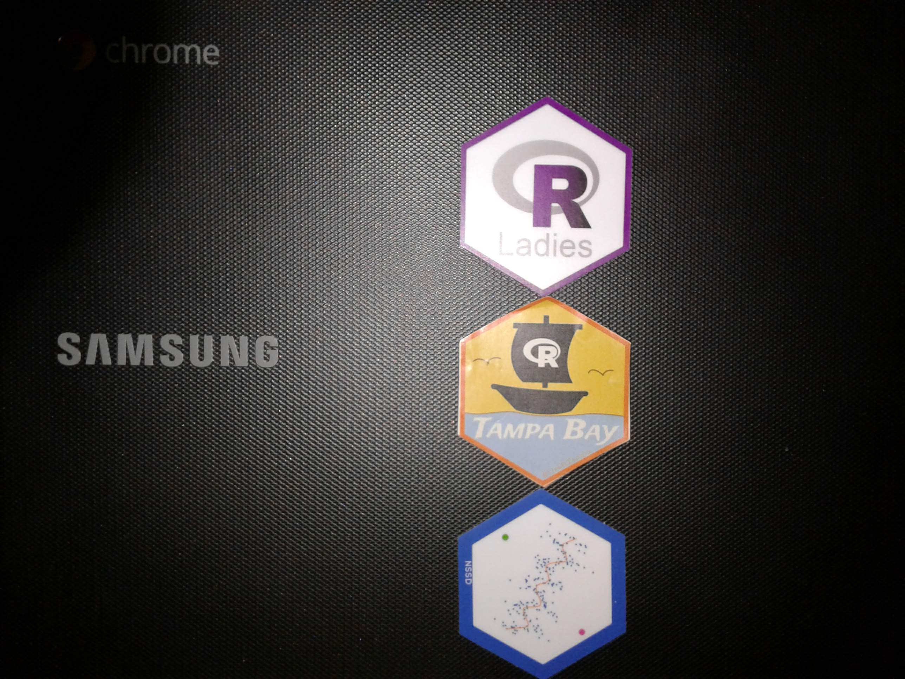

Kevin Gilds
Hi there my name is Kevin
I am an R/Shiny Developer with expertise in helping nonprofits collect, manage and analyze their program data. I learned data science techniques to make these jobs better.
Pronouns: he/him
I’m currently working on improving my data pipelines, and communicating data with Shiny Applications.
I’m currently learning Bash and SQL
I’m looking to collaborate on Shiny Applications.
Ask me about data in the nonprofit sector.
How to reach me: kevin.gilds@hey.com
Technical Skills


Stats
Blog Posts
Kaggle Courses
Click to Expand
Intro to Python | 2021-08-09 | Certificate
Intro to Machine Learning | 2021-08-10 | Certificate
Intermediate Machine Learning | 2021-08-14 | Certificate
Feature Engineering | 2021-09-18 | Certificate
Pandas | 2021-09-23 | Certificate
Chromebook Date Science
